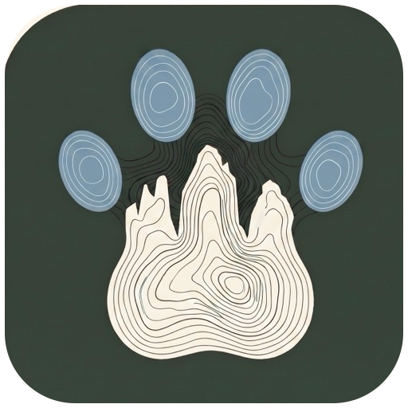

We're working on adding photos of this trail.A short interpretive circuit from Elvas to the Laugen wetland, a reed-fringed protected biotope set within the cultivated Natz–Schabs plateau. The official board lists 4.2 km, 100 m ascent and about 1½ hours.
This is a true loop: it closes back on its own start point, so there's no return leg to plan; with only 100 m of climbing, it's one of the gentler options in the area for older dogs or hot days.
Mapped start suggestion — Elvas route start beside the mapped bus stop. Check current access before travelling.
Availability can change. Carry a full supply.
Use the live forecast, check local access information and be ready for changing mountain conditions.
The trail rating above describes the mountain, and it's the same for every dog. What it can't tell you is how this route pairs with your dog's build, age, and health. Create your dog's free profile for a personalised match.
Before you go: the dog safety guide · water for dogs on trail · dogs on cable cars · meeting a guardian dog